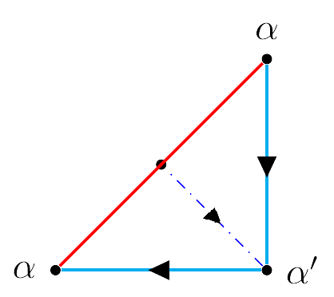

Rectángulos Inscritos
De manera completamente análoga al caso del cuadrado inscrito, podemos cuestionarnos si toda curva de Jordan en el plano euclideo inscribe un rectángulo. Para este caso en particular sabemos que sí es posible, a continuación se presenta la demostración a manos de H. Vaughan
Demostración de Vaughan
Teorema. Toda curva de Jordan $C$ $\in \mathbb{R}^2$ inscribe un rectángulo
Consideremos $\mathbb{R}^2$ y $\mathbb{R}^3$ con la topología usual
Antes de comenzar la demostración, debemos describir un rectángulo de manera conveniente.
$\textbf{Lema. }$ Sean $A, B, C, D \in \mathbb{R}^2$. Si los segmentos $AB$ y $CD$ poseen el mismo punto medio $M$ y $|AM| = |CM|$ entonces $A, B, C$ y $D$ son los vértices de un rectángulo $R$
Puede consultar la demostración de este lema aquí
Teniendo esto, podemos comenzar.
Sea $C$ una curva de Jordan en $\mathbb{R}^3$
Para iniciar esta prueba, debemos definir un conjunto $M$ de la siguiente manera:
\[ M = \{\{x,y\}| x,y \in C \} \]
Ahora definamos la siguiente función $f: M \to \mathbb{R}^3$ de la siguiente manera:
\[f(\{x,y\})=(a,b, d(x,y))\]
Donde $(a,b)$ es el punto medio del segmento $xy$.
Observemos que, para dos pares $\{u,v\}, \{x,y\} \in M$ distintos, $f(\{u,v\}) = f(\{x,y\})$ si y si sólo si los puntos medios de los segmentos $uv$ y $xy$ son los mismos y $|uv|=|xy|$.
Lo anterior, en conjunción con el lema uno implica que:
$f$ es no inyectiva si y sólo si existen cuatro puntos distintos en $C$ que conformen un rectángulo
Dado lo anterior, resta exhibir que $f$ no es inyectiva. Para llegar a esa conclusión tenemos que analizar la estructura de $M$.
Primero estudiemos la siguiente estructura $M'$
\[M' = \{(x,y)| x, y \in C\}\]
Para visualizar la estructura de $M'$, podemos considerar un punto $\alpha \in C $ para realizar un "corte".
Sean $\alpha$ y $\alpha '$ los extremos del camino generado por este corte.
Identificando $\alpha$ y $\alpha '$, esto es $\alpha \sim \alpha '$ tendremos $C$
Ya que la figura obtenida al realizar el corte en $\alpha$ es un camino, éste es homotópico a segmentos de rectas sobre los ejes $X$ y $Y$, de manera que, preservando orientación, podemos considerar el siguiente diagrama:

La figura anterior es el polígono fundamental un toro , de modo que los puntos $(a,b) \in M'$ son puntos sobre un toro
Notemos que la principal diferencia entre $M$ y $M'$ es que, mientras que en $M'$ se cumple que $(a,b)\neq (b,a)$, en $M$ esto no es cierto, es decir $\{a,b\} = \{b,a\}$, de modo que, en la figura anterior, podemos "ignorar" los puntos sobre la identidad, es decir

Para identificar los segmentos azules, realizamos un nuevo "corte" como en la siguente figura
De esta manera obtendremos las siguientes dos figuras:


Identificando las líneas azules tendremos el siguiente polígono fundamental:

El polígono anterior corresponde al polígono fundamental de una banda de Möbius, de esto se sigue que cada $\{a,b\} \in M$ es un punto sobre una banda de Möbius
Con esto en mente, podemos estudiar el comportamiento de $f(M)$.
Obervemos que $f(Fr(M))$ queda completamente contenida en el plano $XY$ pues $Fr(M)$ corresponde a las parejas $\{x,x\}$
Ahora supongamos que no existen cuatro puntos en $C$ que describan un rectángulo, por el lema, tenemos que $f$ es inyectiva.
Se sigue que $f$ es un encaje de la banda de Möbius en $\mathbb{R}^3$, lo que constituiría un $\textit{plano proyectivo}$ en $\mathbb{R}^3$, lo que es una contradicción.